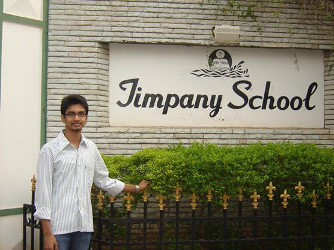
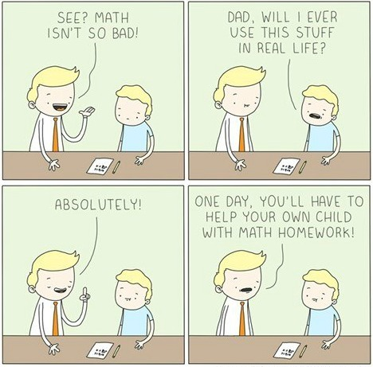

School Life - My parents always ensured I got the best education possible. It was mostly in my hometown Visakhapatnam. Right from my childhood, to my tenth grade, I studied in ETASI Timpany School, which was one of the
most recognised school in Visakhapatnam. I wasn't a topper in my school days, but I used to score enough to get into the top 10 in my class. Science was my most scoring subject, and Social Studies too, only till it broke into
History, Civics and Geography. I used to have a lot of trouble with History and Civics! But, not nearly the amount of trouble I had in Hindi language! I am a total dunce when it comes to Hindi! My average score used to be around
60%, where 50% was the pass mark. Engish was great. The whole city knows that a Timpany School student will be good in english. I am actually weak in Maths, but I never had trouble with it in school days. My favourite subject
used to waver from science to maths, but by the end, I favoured Biology more, although Chemistry was my most scoring subject.
There is always a lot of non-academic activity in my school, such as olympiads, exams, festivals, etc. I took part in numerous olympaids. I mostly scored distinction in Science, and sometimes in Maths too. My school is known for the number of occasions
that are celebrated in the premesis! We used to have a lot of occassions where we would do some great deal of stuff in the school, such as for Grandparent's day, it was mandatory for us to make greeting cards for our grandparents
and invite them to our classrooms, where we used to perform some skits and other sorts of programs for them. Just like any other school, we have houses, which were named after planets. Mine was blue, Jupiter. I was my house's
vice-captain in my tenth grade. And yes, I was a last bencher in my school days.
High School Life - It was two years of High School, "Intermediate Education" as we call it here, in Sri Chaitanya Educational Institutions. And those two years were horrible! We were tortured from morning 7 to evening
7. We were given so many sheets of assignments that I swear I can build a castle out of it. The lessons were tedious and the classroom atmosphere was too competitive. I was a day scholar. The only fun time in a day was when
we were done with the college, I used to roam on the beach road for a while with my friends before going home. The thing about Sri Chaitanya is that it's too commercial. They take up a lot of students, give brilliant coaching
to the best ones and leave out the rest. The best ones get them ranks and they publicize it to take in more people.

I actually wanted to be a doctor, a cardiologist, but I took engineering in the end. So we had 3 major subjects, Maths, Physics and Chemistry. This is where Maths begins to slip out of my hands. I was fantastic in Chemistry. I could just hold my ground
in Physics. The other subjects, English and Sanskrit were treated as very inferior subjects compared to Maths, Physics and Chemistry. And yeah, there was another subject too which was treated so inferior that I honestly don't
even remember its name!
We were made to study for the whole year. They conduct two exams every weekend for sure even if it is Children's Day! I totally hate this educational system. There was a huge discrimination between students. The better were treated better. If you want
to get into the top sections, you need to score more in the "shuffling exams" or the simply the discrimination exams. But in the end I realized, what we were preparing for all these two years was to write an even bigger discrimination
exam, the exam which will decide which university you get into. The best get placed into best universities, and the rest are left with the next best. This exactly resembles what happens in Sri Chaitanya, score more, go into
better section. In the end, the educational system made sense. When more than 9 lakh people are writing to get into universities with around 2 or 2 lakh seats in total, may be it is the right educational system for it. But
I hate that system nonetheless, and I really love to see a change.
College Life - Fate has a sense of humour, it knows I am weak in Hindi, so it put me in a place where the local language is Hindi! I got a seat in Indian Institute of Information Technology, Allahabad (IIITA), Information
Technology branch. People in Allahabad natively speak Hindi. It was the first time I was studying in a hostel, away from home, but it was okay with me. It was a relief coming to IIITA after two years in Sri Chaitanya. The atmosphere
felt familiar, just like I had in my school. There is no pressure on us to study, but you gotta keep up in education. I always wondered when I'm going to use all the stuff I struggled to learn in Maths. Engineering answered
my questions. Maths seemed more friendly, although I still get a bad grade. My best strength, Chemistry, was thrown away, as we don't do any Chemistry related stuff in Information Technology. So there goes my strength again.
Again? I lost Biology when I took engineering! But little did I know that I'll fall in love with programming.
Programming is probably the most important topic in Information Technology. I never wrote good programs before. We used to have computer science in school where we were taught LOGO but after 8th grade, it was optional.
And I took Cookery in place of it. My seniors laghed at me when they heard this. I learned how to write programs for the first time when I was in my first year of B Tech. I still remember how amazed I was when I wrote my first
for loop program to see what it can do. I was selected as member for the Networking society (INDEM) in my first year. Then I became the co-ordinator of the Technical society (GeekHaven) in my third year. I got an internship
in Flipkart, in my third year.
You can never be overdressed or overeducated.
Oscar Wilde